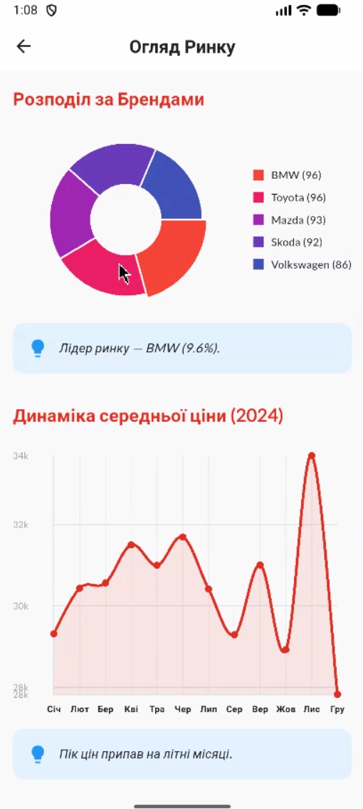

Короткий опис
Проєкт присвячений створенню сучасного кросплатформного інструменту для агрегації та аналізу даних ринку автомобілів. Застосунок дозволяє користувачам відслідковувати цінові тренди, порівнювати характеристики та отримувати статистику в реальному часі.
Актуальність теми
В умовах динамічного автомобільного ринку наявність швидкого, зручного та мобільного інструменту для аналітики даних є критично важливою для прийняття зважених рішень як покупцями, так і продавцями.
Мета та завдання
Мета: Спроєктувати та розробити ефективний мобільний застосунок для візуалізації та аналізу даних авторинку.
Основні завдання:
- Дослідити існуючі рішення на ринку автомобільної аналітики.
- Розробити архітектуру кросплатформного застосунку на базі Flutter.
- Імплементувати алгоритми обробки масивів даних.
- Створити інтуїтивно зрозумілий користувацький інтерфейс (UI/UX).
- Провести тестування та оптимізацію продуктивності.
Опис методології
При розробці використовується методологія Agile (Scrum). Технологічний стек включає фреймворк Flutter (Dart) для клієнтської частини, REST API для отримання даних та систему контролю версій Git для керування кодом.
Очікувані результати
Готовий програмний продукт, що стабільно працює на платформах Android та iOS, забезпечує високу швидкість обробки даних та має налаштований CI/CD пайплайн для подальшого масштабування.
